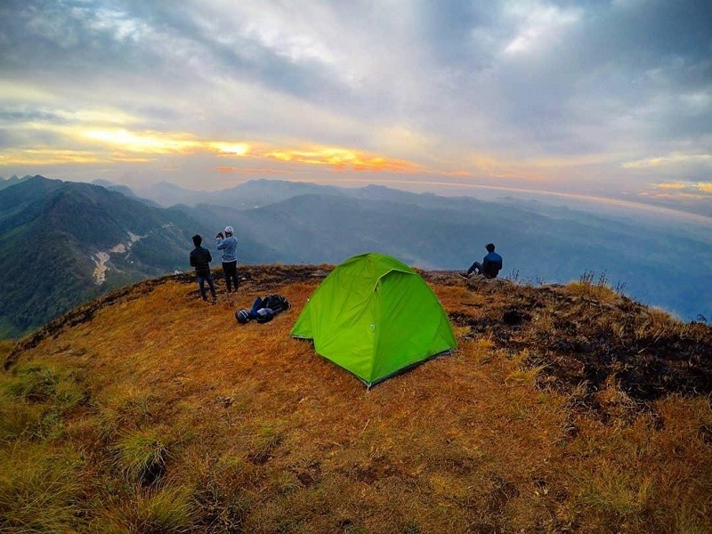
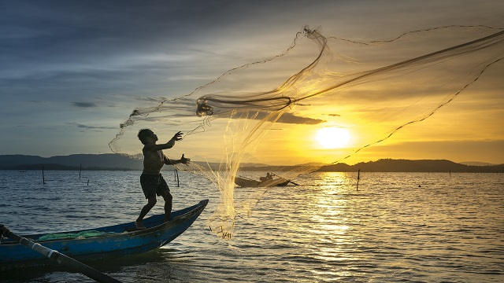
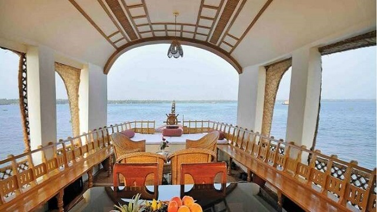

Ashtamudi Lake, Thangassery lighthouse, Kollam Beach, Thirumullavaram Beach, Kollam Adventure Park, Anandavalleswaram Temple, Sri Mahaganapathi Temple, Kumbhavurutty Waterfalls, Palaruvi Falls, Thevally Palace and many more.
The spectacular places to see in Kollam are so diverse that it’s arduous to explore all at one go. Adored with sea, lakes, plains, mountains, rivers, backwaters, forest, vast green fields, etc this city has been on the route map for a breath-easy vacation. Kollam is a place that will fascinate you with its picturesque beauty, spectacular landscape, culture and tradition.
Travel the utopian stretches of cashew and spices plantation in Kollam or visit the biggest seaport of Kollam, Neendakara Port where you can experience fishing. For sunsets and cruising, head to Ashtamudi lake. Ashtamudi Lake houses this beautiful city on its bank, and it is the starting point for most of the tourists. If the thrill is what entices you, then set out for Thangassery LightHouse to experience scuba diving and surfing. Talking about the undiscovered city, here is the list of places you can visit in Kollam.
PLACES TO EXPLORE
01 ASHTAMUDI LAKE

The incredible beauty of Kerala, Ashtamudi lake has eight branches that coincide with the Arabian sea after converging into one channel, hence the name Ashtamudi, where Ashta means eight and mudi means branch.
Spell-binding the travelers with its inarticulate and persuasive charm, this second largest lake in Kerala is one of the most popular places to visit in Kollam. Beautifying the banks of this lake, palm and coconut trees, intensifies the fascinating experience of calm and lush green waterways.
Thriving harmoniously in Kollam district of Kerala, Ashtamudi lake immerses the tourists with tremendous pleasure by granting them an experience of houseboat cruising.
Things to do - Backwater Cruising, Fishing, Experience unimaginable stay in a houseboat, Island visit.
Read more
02 THANGASSERY LIGHTHOUSE

Climb up the 200 steps to enjoy the panoramic view of the Arabian sea and Kollam. Mounting grandly above the coconut trees, Tangasseri Lighthouse is the second tallest lighthouse with a height of 140 feet on the coast of Kerala.
The red and white painted bands around the lighthouse make it marvelous and dignified. Moreover, witnessing the pleasant sunset from the top of the lighthouse is a breathtaking experience. Attracting tourists towards its enchanting beauty and calming view, an evening to the lighthouse is worth visiting among places to see in Kollam.
Things to do - Climb up and enjoy the view from the lighthouse, Relax at Thangassery beach, Pump the adrenaline rush with scuba diving and surfing, go fishing.
Read more
03 THIRUMULLAVARAM BEACH
An unexplored beach of Kerala where golden sand surrounds clear blue water and the serene seashore is embellished by coconut and palm trees. The delightful view of sun-soaked sand, soothing blue sea, and lush green palm never fail to attract tourists.
Holding a place in the list of places to see in Kollam, tourists visit this place to get immersed in the calm and peaceful surroundings. Being one of the isolated beaches of Kerala, the beauty of the beach is still unimpaired. Just like any other beach, travelers relax and enjoy swimming and sun-bathing.
Things to do - Sit back and relax, Swimming, Sun-bathing, Visit nearby Vishnu temple.
Read more
04 KOLLAM ADVENTURE PARK

The center of leisure activities for people with no age limit. A must-go-to place for luxurious boating, picnic, and the art museum among other tourist places in Kollam.
The park encloses a place possessing numerous rides and impressive scenery that makes it ideal for a family picnic. With the alluring backwaters, travelers can enjoy houseboat cruises, deluxe boats, and speedboats in the midst of serene waters. Apart from the boat club, children’s park, this place covers enticements such as a 200-year-old government guest house and Yatri Nivas.
Also, on the establishment is the art museum, where painting lovers seizes a chance to admire exhibit paintings collected from different parts of the country. And the fun doesn’t end here, a nature dweller can visit the mangroves close to the park to spot endangered species of bushes.
Things to do - Boating, Art Museum, yatri Nivas, and vintage guest house, fun activities and rides at the park.
Read more
05 PARAVUR LAKE
Paravur town in the Kollam district bears a small lake that merges with the backwaters of Kerala. Attracting a number of travelers, this lake embellishes the Keralan backwaters with perfection and serenity. Another real fascination in the region of Paravur lake is the Priyadarshini watercraft club. This watercraft club uncovers immense boating choices in the realm where the Arabian Sea, river, and the Kappil backwater merge. Travelers can fancy shopping at the stretch of Paravur-Edava-Varkala street, running along the bank of Paravur Lake. Paravur Lake is additionally exceptionally famous Paravur Lake is around 4 kilometers far from Paravur town. Paravur-Edava-Varkala Street goes through the banks of Paravur Lake. Furthermore, the mangroves standing along both sides of the lake intensifies its beauty, making it more attractive. Additionally, to admire the wide-ranging view of the lake, climb on to the mountains situated on the north and east of the place. This lake is popular and significant as it connects as a part of the Trivandrum-Shornaur Canal System to the Edava and Ashdamudi Kayal.
Read more
PHOTO GALLERY

- 
- 

- 